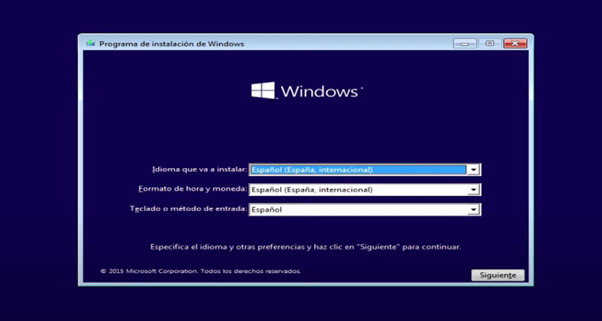
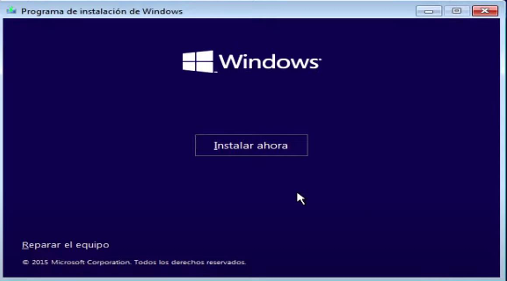
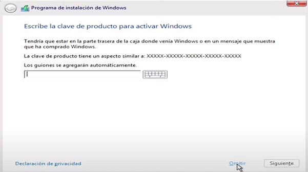
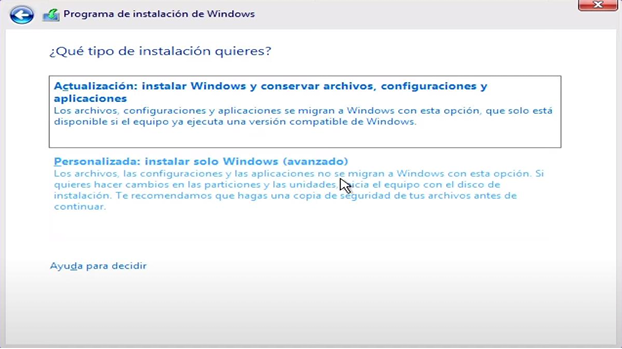
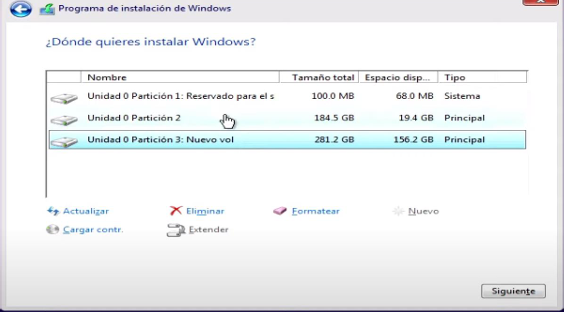
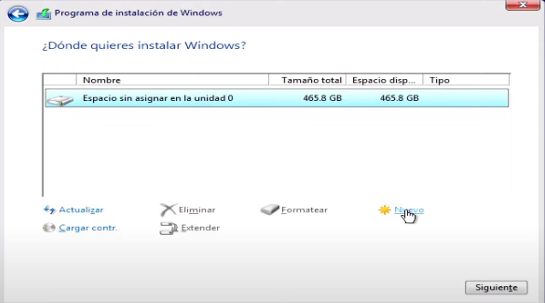
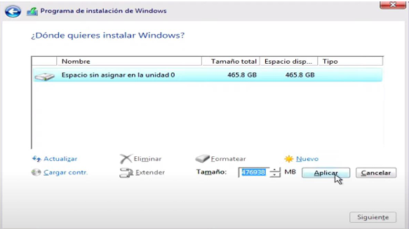
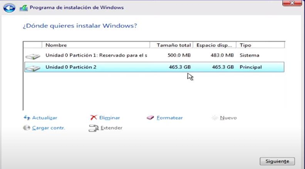
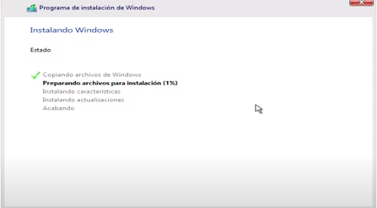

Proceso de instalación de Windows 10
Pasos iniciales
- Inicia tu computadora desde el USB booteable
- En la pantalla de instalación, selecciona tu idioma y configuración de teclado 
- Haz clic en "Instalar ahora" 
- Si tienes una clave de producto, ingrésala. Si no, selecciona "No tengo clave de producto" 
- Selecciona la versión de Windows 10 que deseas instalar
- Acepta los términos de licencia
Configuración de particiones
- Selecciona "Instalación personalizada: instalar solo Windows (avanzado)" 
- En la pantalla de particiones:
- Borra todas las particiones existentes (¡Asegúrate de haber respaldado tus datos!) 
- Selecciona el espacio no asignado
- Haz clic en "Nuevo" para crear una nueva partición 
- Deja el tamaño por defecto y haz clic en "Aplicar" 
- Selecciona la nueva partición y haz clic en "Siguiente" 
¡Advertencia! Borrar particiones eliminará todos los datos en esas particiones. Asegúrate de tener copias de seguridad de tus archivos importantes.
Proceso de instalación
Una vez configuradas las particiones, Windows comenzará el proceso de instalación. Este proceso puede tardar entre 20 minutos y una hora, dependiendo de la velocidad de tu hardware.

Consejo: Durante la instalación, tu computadora puede reiniciarse varias veces. Esto es normal y parte del proceso.
Configuración inicial
Después de la instalación, Windows te guiará a través de la configuración inicial:
- Selecciona tu región y preferencias de idioma
- Configura tu teclado
- Conecta a una red Wi-Fi (si está disponible)
- Crea una cuenta de usuario
- Configura las opciones de privacidad
Importante: Asegúrate de que tu computadora esté conectada a una fuente de alimentación durante todo el proceso de instalación para evitar interrupciones.